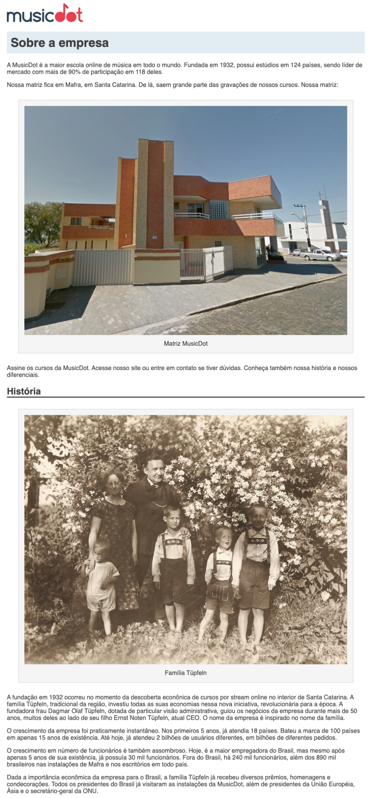

Nesse exercício trabalharemos com os tamanhos das caixas, com o espaço vazio entre essas caixas e com o espaço de respiro entre a caixa e seu conteúdo.
Em resumo, iremos:
diminuir a largura do conteúdo da página para 940px
Para que o conteúdo não fique colado no canto da página, afaste ele dos cantos direito e esquerdo da tela, até que fique centralizado.
criar um espaço de respiro interno de 10px para o conteúdo do título principal
criar um espaço de respiro interno de 15px para o conteúdo das figuras
afastar 30px as figuras dos cantos da tela e das caixas que vêm antes e depois delas
dentro das figuras, afastar 10px a legenda da imagem
A página ficará assim:
